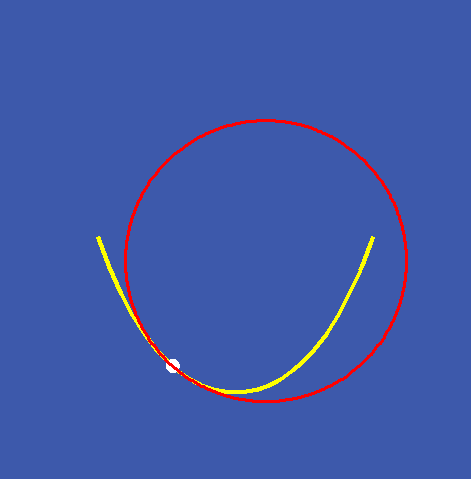
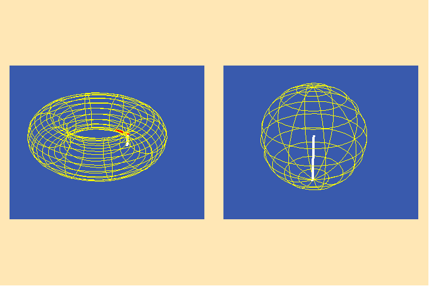

August 28, 2006
Riemann For Anti-Dummies Part 68
An Insider’s Guide to the Universe
by Bruce Director
Though all humans are blessed to spend eternity inside the universe, many squander the mortal portion, deluded they are somewhere else. These assumed “outsiders” acquire an obsessive belief in a fantasy world whose nature is determined by {a priori} axiomatic assumptions of the deluded’s choosing, and an insistence that any experimental evidence contradicting these axioms must be either disregarded, or, if grudgingly acknowledged, determined to be from “outside” their world. Typical of such beliefs are the notions of Euclidean geometry, empiricism, positivism, existentialism, or that most pernicious of pathologies afflicting our culture today: Baby-Boomerism.
Since it is inevitable that those afflicted with this mental disease will experience occasions (at least one is guaranteed, though many are likely), in which they will confront the fallacy of their beliefs, dissecting their delusions primarily provides clinical evidence relevant to psycho-pathologists. While the study of such pathologies is essential to the identification of disease, the treatment and prevention demands a positive conception of health. Thus the continued development of the human condition requires the happy investigation of the real world that humans have been designed to inhabit. As the history of mankind’s increasing dominance in and over the universe demonstrates, it is the natural proclivity of man to do that. Fortunately, as Plato, Cusa, Leibniz and Kepler all emphasized, the universe has been created to this end, for cognition is a pervasive and efficient principle {in} the universe. Further, the entire universe is at work in every infinitesimal part, accessible to being grasped, and acted upon, by the human mind.
The most advanced approach to such an investigation of the universe “from the inside”, was laid down by Riemann in his famous 1854 habilitation dissertation. As revolutionary as it was ancient, Riemann insisted on a return to {ante}-Euclidean sanity, demanding that science abandon the acceptance of axiomatic systems, and proceed solely on the basis of hypotheses generated from the investigation of physical principles. The problem Riemann faced was that, for more than two thousand years, scientists had become indoctrinated into accepting psuedo-systems (such as Euclidean geometry), as the prerequisite scaffold on which science must be built, either as the accepted, but assumed false, form of expressing a true discovery, or, as in the case of Aristotelianism, the actual form of human knowledge. Riemann recognized, as did his sponsor in this project, C. F. Gauss, and Gauss’s sponsor, A. G. Kaestner, that, whether as a means of expression, or as an actually held false belief, Aristotelean and Euclidean-type dogmas were obstructions that imprisoned the mind inside a false world, rendering it only capable of peering, impotently, into what the victim believed to be an outer, real world.
Consequently, for science to make progress, this distinction must be broken. There {is} no outside. There is one, self-bounded universe, whose progressive development is characterized by an anti-entropic tendency towards higher states of organization and existence, which is knowable from the inside through the cognitive powers embodied in the human mind. The appropriate form of expression of this physical reality, is, for modern science, based on the conception of a Riemannian tensor 1.
On the occasion of his habilitation dissertation, Riemann elaborated the method by which this insider’s science must proceed. In so doing, he gave voice to the actual form of discovery that underlay every advance in science, from the ancient discoveries associated with the Egyptian-Pythagorean science of {Sphaerics}, through Gauss’s then-recent accomplishments in astronomy, geodesy, geomagnetism, electrodynamics and epistemology. But he went further, generalizing this method to a degree never before achieved, whose full implications are only now coming to light with LaRouche’s discoveries in the domain of the science of physical economy, and the elaboration of those ideas through the ongoing research project of economic animations currently being developed, under LaRouche’s personal direction, by a team of young thinkers from the LaRouche Youth Movement.
Nevertheless, reaction dies hard. As soon as Riemann’s audible words faded away, his method came under attack. At first this attack took the form of stone cold silence. After Riemann’s premature death, the assault took on a more sophistical form. While his students and collaborators continued to animate his ideas, his enemies attempted to suffocate his program under a system of mathematical formalism, typified by the presentation in Luther Pfahler Eisenhart’s 1926 treatise, Riemannian Geometry 2. The problem with such treatments as Eisenhart’s is not the use of mathematical formulas as such (for Riemann utilized certain formal expressions himself), but the substitution of formal expressions, for Riemann’s actual ideas. In so doing, Riemann’s enemies succeeded, at least in part, in imposing a new form of Euclidean dogma, under the guise of a neo-Euclidean formalism maliciously misnamed “Riemannian Geometry”. Since the effect of this sophistry has now brought science, and in a broader sense, society as a whole, to a breakdown point, it is necessary to revive Riemann’s actual approach. The first step is to place Riemann’s discovery inside the historical process in which it is still unfolding.
From Brunelleschi To Kepler
Much to the dismay of the Babylonian priesthood from which the dogmas of Euclid and Aristotle sprang, the human mind can recognize and act on universal physical principles without resort to mathematical formalism. Euclid’s Elements themselves, reluctantly, but definitively, testify to this fact. None of the discoveries reported in Euclid’s Elements were, or could have been, discovered by the deductive method utilized by Euclid. As anyone who has tried to actually recreate those discoveries for himself soon realizes, the discoveries reported therein can only be recreated in reverse order, beginning with the physical construction of the five regular solids as a consequence of spherical action, then to the development of incommensurable magnitudes, proportions and numbers, and finally to the construction of the plane figures. Even more to the point, the devastating flaw in Euclid’s Elements is embedded in the characteristic which the Aristoteleans considered its most viable attribute: the deductive method.
That flaw, as Kaestner, Gauss and Riemann emphasized, is exposed by the Elements’ dependence on the validity of the parallel postulate–a proposition which cannot be proven within the deductive system on which the Elements relies. As Gauss stated, without the parallel postulate, there are no similar triangles, and without similar triangles, all the theorems of Euclidean geometry fail. But, as Gauss also emphasized, the parallel postulate assumes something that is nowhere stated–that the physical universe is infinitely extended, rectilinearly, or as Gauss and Riemann would put it: flat. 3
Though the achievements of Greek science in the generations following Euclid (most notably the accomplishments of Archimedes, Eratosthenes, and Aristarchus) are derived from the ante-Euclidean approach associated with the astrophysics that the Egyptians and Pythagoreans denoted as Sphaerics, the relative dominance of this saner form of science began to fade with the murder of Archimedes by Roman soldiers in approximately 212 B.C. The ensuing relative dominance of Euclidean geometry (with the associated cultural decay of the Roman Empire praised so highly by Lord Shelburne’s Edward Gibbon), was brought to a close in 1436, with Brunelleschi’s successful completion of the free-standing, self-supporting cupola over the church of Santa Maria del Fiore in Florence. From that time to ours, Burnelleschi’s Dome stands as a defiant reminder that the real universe is not flat, as the Euclideans would indicate, but is determined by physical principles, which Gauss and Riemann would later express as physical curvature (as will be developed more fully below).
As LaRouche emphasized in 1988, to the shock of many at the time, the principle that Brunelleschi recognized and employed in the successful construction of the Dome, was the principle of least-action expressed by the catenary– a principle which was not fully elaborated until Leibniz did so more than two hundred years later. Nevertheless, what Brunelleschi’s accomplishment demonstrates, is that the human mind is capable of recognizing, acting on, and communicating knowledge of physical principles without ever reducing those principles to a formal mathematical construct. Subsequently, when Leibniz showed that the physical principle underlying the catenary could be characterized as a function of logarithmic functions, he gave that expression a mathematical form. Nevertheless, the mathematical expression of Leibniz’s discovery is not the principle. It is a rigorously ironical statement of the transcendental nature of the catenary principle–a precise statement of a mathematical ambiguity from which the principle that Leibniz discovered can be recreated anew in the mind of the scientist. 4
The universal principle which Brunelleshi’s achievement exemplifies, was elaborated in the shadow of his newly created Dome by Nicholas of Cusa. Writing in De Docta Ignorantia, among other locations, Cusa insisted, on epistemological grounds, that the characteristic of action in the physical universe is not constant, but is always changing non-uniformly. This meant that, contrary to the Aristoteleans, physical action did not conform to what was mathematically convenient-- perfect circles. Rather, Cusa showed that the non-uniformity of physical action is a characteristic of the universe’s self-perfectability, which is a more perfect condition than the static, unchanging sterility of a world governed by Aristotle’s perfect circles. Further, because human creativity is central to the self-perfectability of the universe, the mind is capable of discovering, from within the unfolding universe, the underlying principles governing it.
Cusa’s work reintroduced into science the requirement to identify and measure a physical principle by the characteristic of change expressed by the action of that principle in the physical world–a characteristic that Gauss and Riemann would later refer to as curvature. The first, and perhaps most dramatic, application of this was Kepler’s discovery of the principle of universal gravitation.
A full pedagogical reworking of Kepler’s discovery, as detailed in his 1609 New Astronomy, is currently being developed by a team of researchers from the LYM, but a brief summary of the relevant points is necessary for this discussion.
Kepler rejected the Aristotelean precept that knowledge of the physical world must be confined to the domain of sense perception, and that principles governing physical motion were relegated to, what was for them, an ultimately unknowable, and unchanging, metaphysical domain. For Aristotelean astronomers, this posed a particularly vexing problem, because the full planetary motions extend outside the field of vision of the observer, and the causes of that motion are completely outside the astronomer’s sensual and (for the Aristotelean), intellectual ken. Consequently, the astronomers of the Roman period disclaimed any truthful knowledge of planetary motion, settling for mathematical descriptions of their speculations about how those motions might appear, were they able to directly perceive them.
This view conformed perfectly to the prevailing feudalist opinion that mortal man was, at best, a sophisticated beast whose cognitive powers were outside of, and inconsequential to, the “actual” universe, which the Aristoteleans falsely imagined to be governed by a fixed set of eternally unchanging laws. As such, mortal man, Aristotelean opinion held, must be governed by the, apparently chaotic, laws of animal behavior, without recourse to universal, eternal principles, which they insisted did not change. 5 But as a self-avowed adherent of Cusa, Kepler realized that this view of man and the universe was wrong. Man, through his powers of cognition, is capable of knowing the principles governing the universe as principles of change, as Heraclitus and Cusa both emphasized. Consequently, Kepler understood the motions of the planets and man’s investigation of them, as part of a single, unfolding, self-developing creation, which included the development of life and human cognition. Mortal man is not outside the universe nor is the universe outside the province of mortal man. Rather, mortal man, possessed with the power of cognition, transcends mortality, playing a unique and integral role in the eternally continuing development of the universe as a whole.
Consequently, Kepler emphasized, the best vantage point from which to discover the principles of planetary motion is not outside, but inside the universe:
For as the Sun in its revolution about its own axis moves all the planets by the emanation which it sends out from itself, so also the mind, as the philosophers tell us, understanding itself and all that is in itself, stimulates the use of reason, and by spreading and unfolding its simplicity causes all things to be understood. And so closely are the motions of the planets round the Sun and the processes of reasoning linked and tied to each other that if the Earth, our home, did not measure out its annual circuit in the midst of the other spheres, changing place for place, position for position, human reasoning would never struggle to the absolutely true distances of the planets, and to the other things which depend on them, and would never establish astronomy. 6
As such, he rejected the mathematical models of planetary motion that had been postulated by Ptolemy, Copernicus and Tycho Brahe. Though each model was radically different, all three tried to describe the experimentally determined non-uniform motion of the planets, by fitting the observational statistics into mathematically defined perfect circles. Kepler painstakingly demonstrated in the opening section of the New Astronomy, that such statistical methods were incapable of determining the truth, as all three models gave virtually the same statistical result. To this, the protagonists of Ptolemy, Copernicus or Brahe could raise no objection, as all three accepted the Aristotelean belief that mathematical formalism was the only certain form of knowledge.
But for Kepler, hypotheses concerning the true physical causes are the only form of knowledge. Consequently, he proceeded to show that there is an anomaly inherent in the statistical interpretations of Ptolemy, Copernicus and Brahe which reflects the existence of a physical principle not accounted for in any of the three systems. Like the parallel postulate for Euclid’s Elements, Kepler’s anomaly cannot be detected by the methods of Ptolemy, Copernicus and Brahe, and no manipulation within the respective mathematical systems, could eliminate it. Once identified, however, either the system must be rejected, or its insanity must be adopted.
The underlying assumption of all three models, was the Aristotelean insistence that motion of a material body cannot be caused by an immaterial principle but must be caused by something within the body itself. Consequently, the Aristoteleans saw the planetary orbit as the artifact of the planet. Since the planet’s apparently non-uniform motion along the arc of its orbit deviated from the presumed perfection of uniform circular motion, Ptolemy, Copernicus, and Brahe all sought some point (equant) around which the planet would be traversing equal arcs along its orbit. Kepler showed, exhaustively, that no such point existed. No matter how cleverly one tried to manipulate the statistics, with respect to the models of Ptolemy, Copernicus or Brahe, a discrepancy remained.
Kepler concluded that this discrepancy was not a statistical aberration. It was a matter of principle. For Kepler the planet’s orbit is not the trace of its motion. Rather, the orbit is determined by the physical cause that is determining the planet’s motion. That cause, Kepler insisted, is a physical principle (gravitation) that pervades the universe. Under this principle, there is a connection between the Sun and the planets individually (characterized by equal areas: equal times), and the Sun and all the planets collectively (characterized by the harmonic relationships among the planets’ minimum and maximum speeds). The observational statistics were, for Kepler, simply the footprints of the principle. Once the principle was identified, the footprints could be explained.
Thus, for Kepler, the planet’s non-uniform motion is guided at every infinitesimal interval by the harmonic characteristics of the solar system as a whole. Those harmonic principles defined the planet’s orbit as what Leibniz would later call a least-action pathway of the solar system. In other words, the planets are not moving in one of infinitely many possible orbits in an otherwise empty space. Rather, the planets are moving in least-action pathways uniquely defined by the harmonic characteristics of the solar system. From the standpoint of the planet, Kepler emphasized, that pathway is a straight line. “Straightness” , as Gauss would later insist, is established by physical, not {a priori} mathematical considerations. The human mind judges those physical considerations as the characteristic of change of a physical principle. That changing characteristic, Gauss and Riemann would later express as the notion of physical curvature.
Physical Curvature From Leibniz to Gauss
Kepler’s revolutionized physical astronomy demanded a complete change in the prevailing mathematics, which is a far cry from the state of science today. While Kepler pushed the physics forward and demanded the creation of a new mathematics consistent with it, today’s sophistical peer review system insists on the opposite: no physical discoveries are allowed into the temple, unless stated in terms of the already existing mathematics.
By demonstrating that physical action is truly non-uniform, Kepler had to confront the problem of how to measure the motion of the planet as a function of the changing effect of the principle of gravitation. That required the development of a new mathematics that could express position as a function of change, instead of denoting change as merely a difference in position. Kepler pointed to the direction the new mathematics must take, and demanded that future scientists develop it.
He specified that the entire solar system must be considered as the unit of action, and the motion of the planet at any moment must, accordingly, be measured as a function of the harmonic characteristics of the solar system as a whole. Those harmonic characteristics, as reflected in the role of the five Platonic solids and the proportions corresponding to musical intervals among the planet’s minimum and maximum speeds, determined the number and positions of the planetary orbits. Within each orbit, the planet’s motion was measured with respect to the orbit as a whole. Thus a mutually inverse relationship exists between the momentary effect of gravity on the planet, and the total effect of what Gauss would later call the gravitational potential, of the solar system as a whole.
Leibniz generalized this conception of Kepler by the introduction of the notion of the infinitesimal as the expression of the pervasive, yet ever-changing, effect of a universal principle at every point of physical space-time. He expressed the inverse relationship between the infinitesimal and universal expressions of that principle as, respectively, the differential and integral forms of the calculus. This single infinitesimal calculus of Leibniz is the only true calculus. The frauds of Newton and Cauchy are nothing more than crude sophistries aimed at eliminating the metaphysical significance of Leibniz’s physical concept of the infinitesimal. While the infinitesimal-free formalisms of Newton, Cauchy and their progeny might be appealing to pure mathematicians, anyone seeking to understand anything about the physical universe is drawn back, consciously or not, to some form of Leibniz’s conception. The relative potency, or lack thereof, of a scientist, is, in part, reflected in the degree to which that scientist is conscious, explicitly or implicitly, of the preeminence of Leibniz’s method.
Leibniz’s approach to the calculus is recounted primarily through his own writings and those of his collaborator, Johann Bernoulli. It has been treated, pedagogically, in previous installments of this series. For reasons relevant to this pedagogical discussion, Leibniz’s and Bernoulli’s calculus will be examined, through the example of its application to the catenary, from the standpoint of its later development by Gauss and Riemann.
The catenary is the crucial example of the metaphysical truthfulness of Leibniz’s calculus. All prior attempts, most notably Galileo’s, to explain the catenary’s shape from mathematical considerations, failed. It was only through the application of Leibniz’s calculus to the physical characteristics of the hanging chain, that Bernoulli and Leibniz succeeded in revealing the metaphysical principle underlying the catenary. 7
Both Leibniz and Bernoulli recognized that the shape assumed by a hanging chain of uniform thickness reflects the physical effect of applying a tension across a gravitational potential. Therefore, they rejected any attempt to explain the catenary by assuming it was a “curve” in an otherwise empty and flat Euclidean space. Rather, they considered the shape of the curve as expressing the non-uniform changing interaction of gravity and tension. This can be confirmed by the experiments Bernoulli specifies in his text on the integral calculus, or, those used in pedagogical presentations by members of the LYM 8. Anyone performing these experiments will recognize a change in the direction of the chain from point to point, as the physically determined effect of the changing relationship of gravity and tension. Thus the curvature of the chain is not an arbitrary deviation from Euclidean straightness. It is the expression of an experimentally determined physical characteristic.
It is important to emphasize, however, that curvature, in this sense, is not a mathematical object, but a mathematical expression of a physically determined characteristic from which the metric relations of the catenary are derived. These are expressed by the functional relationship between the length of the chain within a given interval, and the changing curvature within that same interval. In the case of the catenary, this relationship is expressed mathematically by Bernoulli’s differential equation which expresses the length of the chain as a function of the changing effect of gravity on tension. 9
Like a planetary orbit, the catenary exhibits a total curvature which is expressed by the overall shape of the hanging chain 10. Also like a planetary orbit, the curvature is changing, differently, in every infinitesimal part. This infinitesimal curvature is an expression of the action of a physical principle acting tangentially on the physical chain as if it were acting on the visible world from outside. Though outside the visible world, it is not outside the universe. Consequently discovering this infinitesimal expression is the means by which man can discover from the inside of a physical process, the principles governing it from outside the visible domain. The infinitesimal curvature can be measured, as Leibniz proposed, by the inverse of the radius of the osculating circle at that point. (See Figure 1.).

However, that curvature can also be measured from inside the chain, so to speak, by the experimentally measured changing effect of the interaction of gravity and tension on the chain, as specified by Leibniz’s and Bernoulli’s differential functions.
However, deeper investigations of the physical universe requires the ability to discover, from the inside, the effects of many principles acting together at a single place in physical space-time. This notion of “intrinsic” curvature becomes more clear, when understood from the standpoint of Gauss’s development of it in his famous treatise on curved surfaces 11. Gauss had been deeply involved in physical investigations in geodesy, geomagnetism and astronomy, such as his determination of the orbit of Ceres, his determination of the shape of the Earth, and his determination of the nature of the Earth’s magnetic field. Like Kepler’s determination of the principles of planetary motion, all such investigations demanded the determination of physical principles from the inside. For Kepler, that meant determining the motions of the planets from a planet (Earth) that was also moving according to the very principles Kepler was trying to discover. But Gauss had an additional problem. Whereas Kepler had the benefit of a large number of widely spaced observations from which to work, Gauss was working from a small number of relatively infinitesimal measurements. This prompted Gauss to develop an extended form of Leibniz’s calculus, in which he investigated the relationship between global physical characteristics and their expression in the infinitesimally small. This approach has since become known as differential geometry.
Such physically determined surfaces, Gauss insisted, must not be considered as curved objects otherwise embedded in a flat three-dimensional Euclidean space, but as what Riemann would later call doubly-extended manifolds. This concept, though new to Gauss in this form, harkens back to a concept Kepler pronounced in the second chapter of the Mysterium Cosmographicum. Referencing Cusa’s emphasis on the epistemological importance of the difference between the curved and the straight, Kepler distinguishes between the globe, which is a sphere embedded in three-dimensional space, and a sphere, which he considers to be simply the surface. The former, Kepler emphasized, is a mixture of the curved and the straight, whereas the latter is pure curvature.
Consistent with this view of Kepler, Gauss also banished the assumption of the flatness of Euclidean geometry in his investigation of curved surfaces, and considered the surfaces as determined purely by their curvature. Adopting a method from astronomy and geodesy, Gauss measured the curvature of the surface by mapping the changing directions of the normal to the surface onto a sphere. 12 (See Figure 2.).
The areas of the resulting spherical maps (called Gauss maps) are greater when the corresponding areas of the surface are more curved and less when the corresponding areas of the surface are less curved. Gauss called the total area of the spherical map the total, or integral, curvature of that region of the surface. Within that region, however, the curvature could vary quite widely from place to place. Thus, it was necessary for Gauss to develop a concept of local, or infinitesimal measure of curvature at every point within that region. This he defined as the proportion between the area of every infinitesimally small area of the surface and the corresponding infinitesimally small area of the Gauss map. He showed that this quantity could also be measured by the inverse of the product of the radii of the osculating circles to the curves of minimum and maximum curvature at that point. (See Figure 3.).

From these two measurements, integral and local curvature, Gauss could quantify the characteristics of the surface in the large and the changing characteristics in the small.
To measure the curvature of a surface in this way, requires viewing the surfaces from the outside, as if they were embedded in a higher dimensional space 13. However, Gauss, like Cusa, Kepler and Leibniz, realized that in real science, one must be able to measure the physical curvature from the inside, as Gauss had done for the determination of the orbit of Ceres, the shape of the Earth, or the characteristics of the Earth’s magnetic field. This meant being able to determine how the surface is changing in the infinitesimally small, from within the surface. To do this, Gauss relied on an application of Leibniz’s principle of least-action, which, in the case of surfaces, is expressed by the behavior of that surfaces’s shortest lines, i.e. geodesics 14. The characteristics of these geodesics, like the catenary or a planetary orbit, are defined by the nature of the physical principles from which the surface is generated. Thus, their behavior expresses those physical principles.
To do this, Gauss first showed that if, from any point on a surface, a set of geodesic curves of equal lengths is extended, then the curve that connects the endpoints of those geodesics will be perpendicular to all the geodesics. (See Figure 4.)

More generally, he showed, that if any arbitrary curve is drawn on a surface, and geodesic curves of equal length are drawn perpendicular to that arbitrary curve, the curve connecting the endpoints of those geodesics will also be perpendicular to them. (See Figure 5.)

Consequently, on any surface there is an intrinsic set of orthogonal curves, at least one of which are geodesics. (See Figure 6.).

In this way Gauss dispensed with all a priori coordinate systems such as that of Descartes, and replaced them with a set of parameters that expressed the physical nature of the surface itself.
From this Gauss was able to develop a means to express the length of a geodesic curve as a function of the curvature of the surface, and vice versa. That length could be expressed as a function of the orthogonal curves that parametize the surface by a generalized form of the Pythagorean theorem. (See Figure 7.).

Unlike on a “flat” Euclidean surface, in which the relationship between length of the hypotenuse and the legs of the right triangle is independent of its position on the surface, on a curved surface that relationship changes depending on its position. That change is a function of the changing curvature of the surface. Consequently, Gauss’s generalized Pythagorean function, called Gauss’s metric function, expresses how this relationship changes from place to place on the surface, depending on the changing curvature. (See Figure 8.)

This established a determinable functional relationship between length (metric) and curvature.
From a physical standpoint, this meant that he could measure the changing curvature of the surface from the physically measured changes in the lengths of geodesics with respect to the physical parameters of the surface. Gauss applied this method in his famous measurement of the longitude line from Goettingen to Altona, from which, on the basis of a 16" of an arc discrepancy, he developed a new conception of the entire shape of the Earth!
However, the expression of this relationship between length and curvature was mathematically quite complicated. Consequently, Gauss also found a much simpler expression of the relationship between the behavior of the geodesic and the curvature. He recognized that in the real, anti-Euclidean world, there is no such thing as similar triangles. On any curved surface, the sum of the angles of a triangle formed by shortest lines is always greater or less than 180 degrees, depending on whether the surface on which that triangle exists is positively or negatively curved. 15 This difference, which Gauss called the angular excess, or defect, is a function of the area of the triangle. On a positively curved surface, the greater the area of the triangle, the greater the angular excess, up to a maximum. On a negatively curved surface, the smaller the area of the triangle, the greater the angular defect, down to a minimum of zero. The specific proportion between the angular excess and defect and the area is a function of the curvature. On a more (e.g, positively) curved portion of a surface, a triangle encompassing a small area will have a larger angular excess, than a triangle encompassing a similar sized area on a less curved portion. Thus, the curvature of a portion of the surface is expressed by the changing relationship between the area of a geodesic triangle and the angular excess or defect.
In this way, Gauss showed that the curvature of a surface could be measured by the proportion of the spherical excess (or defect) to the area of the geodesic triangle. This enabled the scientist to determine the characteristic curvature of the surface from on the surface without regard to the arbitrary fiction of Euclidean space, or some arbitrary fixed Cartesian, or other, coordinate system.
Though the formulas expressing these relationships could become very complicated, Gauss also developed the means to carry out their calculation, making his concepts directly applicable to the physical problems he was investigating.
In this way, Gauss took the first steps to liberate mankind from the lingering oppression of Euclidean geometry. His protege, Bernhard Riemann, would push it further.
A Brief Interlude on Time
Before turning directly to Riemann’s contribution, it is necessary to include a brief note on the principle of least-action, both for the sake of the scientific completeness of the argument presented, and to wrench the reader away from any lingering dependence on a priori notions of space and time. Perhaps even more stubborn than the adherence to the spatial relations of Euclidean geometry, is the psychological adherence to a belief in the existence of some absolute measure of time. As Plato emphasized in the Timaeus, later echoed, most notably by Philo, Augustine and Cusa, time is not an absolute quantity measured by some great grandfather clock in the sky. Time is a relation of change. As Plato stated it, “time is the moving image of eternity”.
This is the way Kepler understood time. Instead of measuring the non-uniform motion of the planet by a measure of uniform absolute time (mean Sun) Kepler measured time by the planet’s motion itself (true Sun.) He took as the unit of time the unique interval in which the planet’s motion is the same at beginning and end: the entire orbit. Equal portions of time were measured by those units with equal amounts of motion, i.e. equal orbital areas. These orbital areas are relative to the orbit, not absolute. Thus the planet’s motion defines what is time. Without the motion, there is no time.
A similar issue is raised by Fermat’s subsequent discovery that light travels the path of least-time. 16 Under simple reflection, the path of light is the shortest distance. Yet under refraction, Fermat showed, the path of light is the path of least time. The difference between the two physical actions is, that under reflection there is no change in medium, whereas under refraction, there is. The change in medium produces a change in the physical characteristics of the manifold of action. That physical change defines a new behavior for the shortest path, i.e. the geodesic. Under reflection, that geodesic is the path of least-distance. Under refraction it is least-time. The nature of light doesn’t change. It always seeks the shortest path. But when the characteristics of the manifold in which that light is acting changes the shortest path changes from least-distance to least-time.
Thus again, time is not an absolute quantity, but a characteristic of change of physical action–a change in the characteristics of physical space-time.
In the real world there is no absolute time. There is, as Heraclitus, Plato and Cusa emphasized, change, of which time is a relative measure. The most efficient means to wrest oneself from the crippling belief of absolute time is to recognize the obvious: the only unit of absolute time is eternity. All smaller actions are just parts of eternity whose measure is relative to the manifold in which it occurs.
Riemannian Manifolds and Tensors
Riemann began his June 10, 1854 habilitation dissertation in the tradition of Hans Christaan Anderson’s little boy in the story about the Emperor with no clothes. He declared that though the assumptions of Euclidean geometry have been accepted for more than two thousand years, no one had bothered to consider whether they are true. Since all physical action is experimentally determined to be anti-Euclidean, Riemann insisted that the a priori assumptions of Euclidean geometry must be abolished and banned from future consideration in science.
Riemann replaced the arbitrary assumption of an absolute Euclidean space, with the idea of a physical manifold of action whose “dimensions”, like the parameters of Gauss’s surfaces, denote the physical principles acting in that manifold. The number of these dimensions is not fixed a priori, as are the three linear dimensions of Euclidean geometry, but are determined by the number of physical principles that must be considered to fully express the physical action of the manifold.
Thus, Riemann extended Gauss’s notion of a surface to an n-tply extended manifold, of which Gauss’s surfaces represent a special case of a doubly-extended manifold. For example, the path of light under reflection can be seen as a geodesic in a simply-extended manifold because the position of the light can be determined completely from one physical parameter: the angle of incidence. On the other hand, the path of light under refraction is a geodesic in a doubly-extended manifold because the presence of the additional principle requires the determination of position with respect to two parameters: the angle of incidence and the index of refraction. Again, it is not the light which changes from reflection to refraction, but the manifold in which it is acting. That change in the physical principles acting on the manifold produces a corresponding change in the characteristic of the geodesic, from the shortest path to the path of quickest time.
In a fragmentary note written between 1852 and 1853, prior to the delivery of his habilitation dissertation, Riemann gave an example of his concept of a manifold determined by physical principles, not a priori geometrical dimensions.
The concept of a manifold of multiple dimensions subsists independently of our intuitions of space. Space, plane and line are only the most intuitive examples of a manifold of three, two or one dimensions. Yet without having the most minimal intuition we would be able to develop an entire Geometry. I want to explain this with an example:
Suppose that I wanted to make an experiment or observation and it were only important to me to establish one numerical value, say, the degree of heat. In this case, all possible results could be represented by a continuous series of numerical values from positive infinity to negative infinity. But suppose that I wanted to determine two numerical values, say, I wanted to make a determination of temperature and a determination of weight, then the results would have to be conditioned by two magnitudes x and y. Here I would only obtain the totality of cases if I were to give x and y all values between negative infinity and positive infinity, combining each value of x with each value of y. I will obtain a unique case so long as x taken also with y has a determined value.
Now I can extract out the totality of cases, a complex of cases, I can, for example establish the equation ax + by + c = 0 and now put all those cases together where x and y satisfy this equation: I were able to call this complex of cases a {straight line}. From this definition of a straight line I would be able to derive all those theorems about straight lines that occur in geometry. It is clear that one could proceed in this way without relying on the most minimal intuitions about space.
By this manner of treatment of geometry, or the theory of manifolds of three dimensions, all the axioms which are taken in the usual manner of treating spacial intuitions, as for example, that through any two points only one straight line is possible, the first axiom of Euclid, disappear, and only those which are valid for magnitudes in general, for example, that the order of summands is arbitrary, remain.
One now finds easily, how, in the same way, one can obtain a manifold of two dimensions, independent of the existence of a plane, also how one can reach a magnitude of arbitrarily many dimensions. We only must make observations which (... concern the determination of many numerical magnitudes. sentence completed by Weber.)
But it is also interesting to understand the possibility that this treatment of geometry, would, nevertheless, be extremely unfruitful, since we would not find any new theorems and that what is achieved easily and simply through the representation of space is only turned into something complex and difficult. One has to, in general, opt to take the opposite way and where, one runs into the geometry of manifolds of more dimensions, as in the study of definite integrals in the theory of imaginary magnitudes, one uses the intuitions of space as an aid. It is good to know, how, through this, one achieves a true overview about the subject, and only through this way can the essential points be directly brought forward.
Thus, with Euclidean a priori dimensions replaced by physical principles whose number and characteristics reflect the physical characteristics of a manifold of physical action, it fell to Riemann to outline how to express the functional relationship among these principles, without resort to any a priori assumptions. The preliminary direction for this was given in his habilitation dissertation through the development of his concept of a “multiply-extended magnitude”.
Action in an n-tply extended physical manifold, Riemann insisted, must be expressed by the appropriate n-tply extended magnitude. Such magnitudes do not express a fixed set of relationships as in Euclidean geometry. Rather, Riemann’s n-tply extended magnitudes express the dynamic relationships among the principles that determine the physical action in the manifold.
An elementary example is the ancient Pythagorean investigation of the line, square and cube. Think of a line, square and cube whose segment, side and edge, respectively, are all the same length. Are these lengths all the same magnitude? From the standpoint of Euclidean geometry, or formal algebra, the answer would be yes. But from the standpoint of the physical geometry of the Pythagoreans, Gauss and Riemann, the answer is, absolutely not. The only magnitude appropriate to the square is one which expresses the dynamic relationship between length and area, which the Pythagoreans demonstrated is incommensurable with a linear magnitude. Similarly, the only magnitude appropriate to the cube is one that expresses the dynamic relationship between length, area and volume. Under this cubic magnitude, all subsumed relationships are redefined. For example, the relationship between length and area in a cubic magnitude is different from the relationship of length and area in the square one. As the constructions of Plato and Archytas demonstrate, each object is generated by a distinct principle. Each is the product of a different physical manifold, with a specific number of principles and a distinct characteristic curvature 17.
Riemann freed science from the crippling effects of trying to investigate the physical universe using the arbitrary measuring rods and clocks of absolute Euclidean space and time. Once freed, the physical universe itself designates the appropriate quantities by which it should be measured. Just as the Pythagoreans’ demonstration of the difference between a line, square, and cube, Cusa’s insistence that the curved can never be measured by the straight, or Kepler’s understanding that the planet’s motion defined the meaning of time, Riemann’s concept of physically determined n-tply extended manifolds defined a new form of magnitude. One form of such n-tply extended magnitudes, relevant to the study of physical economy, is the modern notion of a tensor.
A tensor is a type of quantity in which the dynamically connected relations, within and among, n-tply extended manifolds, are expressed as a unified magnitude.
While there are formal mathematical expressions of a tensor, such as that presented in Eisenhart’s text, and while these formulas are, at times, useful, such expressions in formulas do not truly embody Riemann’s idea. The idea must be gained first, before the formulas. As Riemann indicated in the fragmentary note above, this is best achieved through the pedagogical use of geometrical examples. In this respect, Riemann is echoing Plato, Cusa and Gauss who all emphasized the metaphorical employment of geometry for the communication of concepts that lay outside the domain of sense perception. In such cases, all warned, that though the geometrical examples are indispensable for our understanding, they are a guide to, not a substitute for, the conception from which they are generated. In his habilitation dissertation Riemann issued a similar admonition:
These relations of measure can be investigated only in abstract notions of magnitude and can be exhibited connectedly only in formulae; upon certain assumptions, however, one is able to resolve them into relations which are separately capable of being represented geometrically, and by this means it becomes possible to express geometrically the results of the calculation. Therefore if one is to reach solid ground, an abstract investigation in formulae is indeed unavoidable, but its results will allow an exhibition in the clothing of geometry. For both parts the foundations are contained in the celebrated treatise of Privy Councillor Gauss upon curved surfaces.
The modern notion of a tensor arises directly from Riemann’s preliminary idea of the nature of an n-tply extended magnitude. In developing this idea, Riemann extended Gauss’s notions of curvature and metric relations from his doubly-extended surfaces to Riemann’s n-tply extended manifolds. From this standpoint, curvature expresses the dynamic interacting relationship of the n physical principles acting in the manifold, while the metric expresses the behavior of the least-action pathways, i.e. geodesics, expressed in the manifold. To grasp these points, one must bear Riemann’s admonition in mind. Use the example of Gauss’s concepts of curvature and metric as a special case, and imagine the extension of these concepts into manifolds that cannot be directly visualized. What is lost by not being able to visualize such manifolds from the outside, is gained by being compelled to discover their nature from the inside. Begin by extending the idea of a curved surface to a concept of curvature for a triply-extended magnitude–a, so-to-speak, curved volume. To do this one must be ruthless in rejecting the a priori notions of Euclidean space. Such a curved volume is not a big square box in which curved action occurs, but a physical manifold defined by the action of three physical principles, or one principle acting in three directions, as for example in the case of the magnetic field of the earth. If one now imagines moving around in such a manifold, (such as the motion of a compass needle as it moves through the earth’s magnetic field), one would experience a changing effect of the physical principles as a distinct change in curvature in each of (in this example) three directions. However the ability to establish any visual representation (even one as inadequate as the one just given), of this same characteristic in a manifold greater than three, is futile. Nevertheless, a precise concept of such multiply-extended curvature can be formed in the mind.
Riemann generalized this concept showing that at any point in an n-tply extended manifold there are n(n-1)/2 distinct surface directions intersecting, each with its own unique curvature, which together determine the curvature of the manifold acting on that point 18 These curvatures, all of which can be completely different, can be measured, as Gauss did, as the proportion between a geodesic triangle’s angular excess, or defect and the area of that triangle encompasses. 19 Riemann defined the measure of curvature at each point of the manifold as the magnitude that expresses the n(n-1)/2 distinct surface curvatures at that point–a magnitude that is now called the Riemann curvature tensor.
This tensor is not a single number. It is a magnitude that expresses how the n(n-1)/2 distinct curvatures are changing at each point, and, how this change changes, from place to place in the manifold. Each distinct curvature measures the change within one of the intersecting surfaces. But, just as the cubic magnitude defines the relationship between length and area differently than the square magnitude, Riemann’s curvature tensor defines each lower component curvature from the standpoint of the dynamics of the manifold as a whole.
In the case of Gauss’s doubly-extended manifolds n(n-1)/2 equals one. Consequently, the curvature tensor has one component--Gauss’s measure of curvature as defined above. 20 For a triply-extended manifold, (a curved “volume”), n(n-1)/2 equals three. Thus, to define the measure of curvature at a point of a triply-extended manifold requires a tensor, that express the functional relationship among three component functions, each of which expresses the changing curvature of a surface. The curvature tensor, therefore, expresses the changing relationship among these three measures of curvature, as a single, subsuming, type of function. Again, the three-foldedenss of this magnitude cannot be expressed simply by one number, or simply by three individual measures of curvature. Rather, one n-tply extended magnitude, or tensor, is required.
For a quadruply extended manifold, six surface directions will intersect at each point, establishing a Riemann curvature tensor expressing a functional relationship among these six distinct measures of curvature.
Though such a manifold cannot be directly visualized, with Riemann’s approach, its measure of curvature can be clearly defined.
In addition to this notion of curvature of an n-tply extended manifold, Riemann defined the concept of an n-tply extended metric. To do this he extended Gauss’s generalization of the Pythagorean metric of the geodesic from doubly-extended to n-tply extended manifolds. Recall that Gauss showed that for a doubly-extended manifold the length of the geodesics are expressed by three functions of the two parameters that define the surface. 21 These three functions express the relationship between the length of a geodesic and the changing curvature of the surface.
For a triply-extended manifold, one can imagine, that instead of the geodesic changing with respect to two parameters (surface differential), it is changing with respect to three, which form, so to speak, a volume differential. As this volume differential moves around the manifold, the length of the geodesic it contains changes. To express the relationship between the length of the geodesic and the three parameters that define the volume differential requires a tensor that expresses a function among six functions.
Again, as inadequate as this visualization is for a triply-extended manifold, even such an indirect visualization is impossible for manifolds whose extension is greater than three. Nevertheless, Riemann developed a precise concept of such an n-tply extended metric. He showed that in an n-tply extended manifold there are, in principle, n(n+1)/2 functions of the manifold’s n physical parameters, necessary to define the metric. 22 These n(n+1)/2 functions have since become known as the Riemann metric tensor. They express the changing effect of the curvature of the manifold on the measurements of the lengths of the geodesic lines.
The above examples, though somewhat abstract, nevertheless provide a basis for forming a pedagogical (as opposed to merely formal) conception of the Riemann curvature and metric tensors. Broadly defined, the notion of a Riemannian tensor expresses a definite set of functional relationships among the n physical principles acting together to produce the total effect in an n-tply extended manifold of physical action.
Further, Riemann’s extension of Gauss’s notions of curvature to n-tply extended manifolds provides a means to determine the physical characteristics of such a manifold from the infinitesimal expressions of those characteristics, i.e. from inside the manifold.
Riemann not only developed the form of the relevant tensors, he also provided an experimental example and elaborated a means for their calculation. In an 1861 paper submitted to the Paris Academy of Science in response to a prize question concerning determining the flow of heat in a homogenous solid body as a function of time and two other variables, Riemann developed a physical example of the curvature of an n-tply extended manifold. In that paper Riemann wrote:
The expression (insert expression for the generalized Pythagorean) can be regarded as a linear element in a general n-fold extended space lying outside our intuition. If in this space we draw all possible shortest lines from the point (s1,s2,...sn) whose initial directions are characterized by the relations: αds1+βδs1; αds2+βδs2;...; αdsn+βδsn (α and β being arbitrary quantities), these lines form a certain surface that can be thought of as situated in the usual space of our intuition. In that case the expression will be a measure of the curvature of the surface at the point (s1,s2,...sn). 23
The spinning top, discussed in the last installment of this series, provides another pedagogical example of a manifold of physical action in which tensors are required to express the physical action. 24 As discussed previously, the top’s motion is the result of its changing relationship to the gravitational potential and the angular momentum generated by the top’s spinning. The effect of each is expressed by a vector comprising three component functions. Thus, to express the top’s motion requires a tensor expressing the changing relationship of the two vectors. This tensor expresses the physical manifold in which the top is spinning, which, as Felix Klein himself was forced to admit, expresses an anti-Euclidean manifold. But, unlike Klein, who pompously insisted that this anti-Euclidean manifold is purely mathematical and has no metaphysical significance, this anti-Euclidean manifold is the only one with both physical and metaphysical reality.
One of the more famous examples of an application of Riemannian-type tensors to physics is Albert. Einstein’s use of them in his general theory of relativity in which he expressed the gravitational relationships of physical space-time by a complex of tensors.
These cited examples, however, only scratch the surface. They are examples of the investigations of physical manifolds in which the principles acting are limited to those associated with the abiotic domain. In the n-tply extended manifolds studied in the science of physical economy, physical principles of the biotic and cognitive domains are also acting. Further, the relationships between these principles are dynamically anti-entropic. Thus an extension of Riemannian-type tensors is required to express the dynamic relationship among manifolds of increasing degrees of extension. Before outlining those requirements, however, it is necessary to consider the other side of the matter investigated by Riemann.
The Physical Topology of Self-Bounded Manifolds
In the above discussion of the generalized form of differential geometry, the notion of physical curvature was extended into manifolds defined by n physical principles and investigated as that characteristic is expressed in the infinitesimally small. This type of investigation is crucial for progress in science, because it is in the infinitesimal regions that the characteristics of curvature and metric relations are measured, and it is from the anomalies discovered by these measurements that the existence and nature of new physical principles are discovered. As Riemann emphasized in his habilitation dissertation, “Knowledge of the causal connection of phenomena is based essentially upon the precision with which we follow them down into the infinitely small.”
However, these characteristics in the small, Riemann understood, are not determined completely by the action in the local regions of a physical manifold. Just as singular events that occurred thousands of years ago, or an intention to produce a result two generations hence, determine the immediate actions in society today, the local characteristics of a physical manifold reflect the global nature of the manifold. Riemann showed that these global characteristics are defined by such features as the number of singularities and the conditions at the boundary of action. In fact, though the local measures of curvature and metric relations can vary quite widely within a manifold, there are certain global characteristics which have a determining effect on their physical significance. Riemann referred to the investigation of these global characteristics as belonging to the domain of “analysis situs”. Later, another of Gauss’s students, Johann Listing, adopted the term “topology” (from the Greek word, “topos” meaning position) for this study. As will become more apparent below, it is only by taking into account the relationship between the topological and local characteristics that it is possible to know anything fundamental about the physical process under investigation.
In his habilitation dissertation and the fragment cited above, Riemann indicated that the context for an investigation into this relationship between local and topological characteristics lay in his study of complex functions, in which he expressed the notion of a self-bounded, multiply-connected manifold in the form of what have since become known as Riemann surfaces. Riemann developed the initial work in this area, under the direction of Gauss, in his 1851 doctoral dissertation. Then, subsequent to his habilitation dissertation, Riemann deepened his investigations in his famous studies of Abelian functions, minimal surfaces, and hypergeometries 25.
Though Riemann’s discovery in this area is a unique advance in knowledge, its roots reach back to Plato and the Pythagoreans, who insisted that all investigation of the universe must begin with a conception of the nature of the universe as a whole. In the Timaeus, Plato expressed this nature as the monotheistic concept that the universe is a single creation of a single creator. Plato states that the geometrical expression of such a self-bounded universe would take a spherical form:
Now for that living creature which is designed to embrace within itself all living creatures the fitting shape will be that which comprises within itself all the shapes there are; wherefore He wrought it into a round, in the shape of a sphere, equidistant in all directions from the center to extremities, which of all shapes is the most perfect and the most self-similar, since He deemed that the similar is infinitely fairer than the dissimilar. And on the outside round about, it was all made smooth with great exactness, and that for many reasons.
Riemann reaffirmed this notion of a finite, self-bounded universe in his habilitation dissertation, except from the higher standpoint of his notion of a multiply-extended manifold:
The unlimitedness of space has therefore a greater certainty, empirically, than any experience of the external. From this, however, follows in no wise its infiniteness, but on the contrary space would necessarily be finite, if one assumes that bodies are independent of situation and so ascribes to space a constant measure of curvature, provided this measure of curvature had any positive value however small. If one were to prolong the elements of direction, that lie in any element of surface, into shortest lines (geodetics), one would obtain an unlimited surface with constant positive measure of curvature, consequently a surface which would take on, in a triply extended manifold, the form of a spherical surface, and would therefore be finite.
Plato emphasized that the topological characteristic of a self-bounded universe also determines a characteristic which modern science would identify as “quantization”. This is expressed, from Plato’s perspective, by the uniqueness of the five regular Platonic and semi-regular Archimedean solids as the unique divisions of the spherical surface. 26 Further progress was made in this area by the investigations of Luca Pacioli and Leonardo da Vinci, particularly the latter’s emphasis on the significance into these matters for the distinction between the abiotic and biotic domains. Significant new advances to this understanding were added by Kepler’s discovery of a new form of regular solid, the so-called Kepler-Poinsot stellated solids, and Napier’s contemporaneous discovery of the pentagramma mirificum. With the crystallographic studies reported in his snowflake paper, Kepler extended this notion into the domain of triply-extended manifolds, as later indicated by Riemann in the above cited section of his habilitation dissertation.
But from Archytas’s construction for the doubling of the cube, to Kepler’s determination of the elliptical nature of the planetary orbits, the experimental evidence indicated that physical action was bounded by a higher form of action than that expressed by these concepts of spherical action.
The solution to this paradox began to come more fully to light with such discoveries as Gauss’s renewed look at the regular and semi-regular solids from the standpoint of the general principles of curvature, reviewed above, his discovery of the connection of Napier’s pentagramma mirificum to elliptical functions, his work on the significance of the arithmetic-geometric mean, and the implications of his insights into the division of the circle, the ellipse and biquadratic residues.
These discoveries presaged Riemann’s insight into the deeper nature of topological effects, which he developed in his study of minimal surfaces, Abelian and hypergeometric functions 27. In these studies, Riemann developed a concept of a higher notion of self-boundedness, which was expressed by the succession of relatively self-bounded manifolds associated with the Riemann surfaces generated with respect to the extended class of transcendental functions known as Abelian functions. Riemann showed that each species of transcendental is associated with an increasing density of singularities, which is expressed in the corresponding Riemann surface by a change in their topological characteristics. (See Figure 10.)

It is this Riemannian notion of self-boundedness which is the relevant approach to modern physical science.
The essential characteristic of these Riemann surfaces, Riemann insisted, is their expression of what he called, “Dirichlet’s Principle”, 28 a physical principle he adopted from his teacher, Lejeune Dirichlet, whose lectures on Gauss’s theory of potential, Riemann had attended at the University of Berlin. In these studies, Gauss and Dirichlet had generalized Leibniz’s initial work on dynamics, through the study of gravity, magnetism and electricity. Like Leibniz, Gauss and Dirichlet emphasized that the specific characteristics of a physical action are the effect of the least-action properties, “potential”, of the physical principles governing that action. Gauss defined as the “potential function” , the function that expresses the characteristic curvature expressed by these least-action properties. In other words, physical principles such as gravity, magnetism and electricity establish an anti-Euclidean manifold, whose nature can be expressed by the general principles of curvature that Gauss had developed. In the lectures which Riemann attended, Dirichlet emphasized that this potential function was expressed by a set of harmonic functions, i.e. functions whose rate of change of curvature is equal in magnitude and perpendicular in direction, and that such harmonic functions necessarily expressed the least-action properties of the potential.
Further, Gauss and Dirichlet also recognized that the specific characteristics of a potential function were determined by the conditions at the boundary of action. For example, the surface of a magnet or of the Earth, in the case of magnetism or gravity, or the conditions at the boundary of a heat conducting body, as in the example developed by Riemann cited above. From this, Dirichlet showed that the characteristics of the potential function throughout the manifold could be specified by the boundary conditions, and changed when those conditions changed. (See Figure 11.).

Riemann went still further. He recognized that Dirichlet’s principle expresses a unique characteristic of functions of a complex variable. When such functions are represented by Riemann’s surfaces, Dirichlet’s principle is extended to include physical manifolds with an increasing density of singularities, as Riemann showed in his work on Abelian and hypergeometric functions.
This meant that Riemann could demonstrate the relationship between the characteristics of curvature in the infinitesimally small, and the global characteristics of the manifold, specifically the number, characteristics and density of singularities.
This can be pedagogically illustrated by example. First, take the sphere, which is the form of the Riemann surface for the simple transcendental functions associated with the circular, hyperbolic and exponential functions. Each such function defines a different set of Gaussian parameters from which the metric relationships are determined. However, the metric relations hold only for local situations. For example, there is only one geodesic between any two points only if those points are close to each other. But if they are the poles, there is an infinite number of geodesics that connect them. Riemann showed that on a spherical surface there are inherently always two such poles. Such surfaces Riemann defined as “simply-connected”. Further, Riemann showed that this is a characteristic of any simply connected surface, and since any simply connected surface can be mapped onto the sphere without changing its harmonic relationships (i.e., conformally), this characteristic is “topological”, i.e., independent of the particular metric relations. Nevertheless, it determines the conditions in which those metric relations exist.
Now look at the case of the torus, which is the surface associated with the elliptical transcendentals. Here an entirely different situation occurs. As Gauss and Riemann showed, this species of transcendental expresses a higher power of physical action than the simple transcendentals. This higher power is expressed by the increasing density of singularities, which is expressed in the Riemann surface by a change in the topological characteristics of the manifold. Riemann denoted surfaces such as the torus as “doubly-connected”. However, unlike the case of simply-connected manifolds, doubly connected manifolds cannot, in general, be conformally mapped to each other. This means that the manifold of doubly-connected manifolds has, in a sense, a greater degree of “quantization”, as this concept was explored by Gauss in his investigation of the arithmetic-geometric mean 29. But, as will become clear below, this change in topology is also associated with a fundamental change in the global nature of the curvature of the manifold.
This change becomes clear when Gauss’s concept of curvature is combined with the notion of the Riemann surfaces, as Riemann did in his study of minimal surfaces. Minimal surfaces, such as the catenoid, express a physical characteristic of least action. This characteristic is expressed by the fact that the mean curvature of a minimal surface is everywhere constant. Riemann showed that the Gauss maps of minimal surfaces are conformal to the original surface. (See Figure 12.)


Since his surfaces generated from complex functions, reflecting the harmonic characteristics of Gauss and Dirichlet’s functions of physical potential, also have this characteristic they imply a corresponding Gauss map.
But, an even deeper insight comes to light when we look further into the topological connection between the Riemann surfaces and Gauss maps. Begin this investigation with a look at the curvature of simply-connected surfaces. As discussed above, the parts of these surfaces that are more curved will generate large areas on the Gauss map, and the parts that are less curved will generate small areas on the Gauss map. (See Figure 13.)

But though the curvature can vary widely from place to place on the surface, the total curvature of the surface, that is, the Gauss map of the entire surface, will be the same for every simply-connected surface!
This would appear to lead to a devastating conclusion if we held to the idea that the form of the universe was simply spherical. For in such a case, the total curvature of the universe would be fixed. Thus, the local curvature could change, but no such changes could affect the overall curvature of the universe itself. This idea corresponds to the Aristotelean dogma that, though change can occur in the small, in the overall scheme of the universe, no fundamental change is possible. This view, of course, is contradicted by the experimental evidence of physical science and the history of man, whose discoveries and applications of universal principles have brought about changes that can only be expressed as a change in the total curvature of the universe.
But, fortunately, as Riemann showed, our minds are not limited to simply-connected manifolds. On the basis of his discoveries, we can form a concept more appropriate to the anti-entropic nature of the real universe: a succession of manifolds of increasing connectivity associated with an increasing change in the total curvature of the manifold.
Now look at the Gauss map for the torus, as an example of a doubly-extended manifold. The outside of the torus is positively curved and the inside negatively curved. The circles that form the boundary of the two regions have zero curvature. Thus, the curvature of the torus is more complex than a simply-connected surface. This becomes clear from the Gauss maps. The outside of the torus maps to an entire sphere, and the inside also maps to an entire sphere, except in the opposite direction. (See Figure 14.)


The boundary circles map to the poles. Thus, the Gauss map of the torus is itself a Riemann surface with a total curvature of zero!
This provides us with a better conception of zero curvature than the idea of flatness. Instead of thinking of a measurement of zero curvature as Euclidean flatness, we can think of zero curvature as the total effect of a manifold with equal amounts of positive and negative curvature. The local curvature in such a manifold can be either negative or positive, as is also possible for a simply-connected surface. But the significance of the local curvature in each manifold is entirely different.
From this comparison of the simply connected surface with a total curvature equal to one spherical surface, and the torus with a total curvature of zero, it might appear that we are not heading in the direction of a concept of a universe with a possibility of an ever changing curvature. But this appearance is remedied when we look at the Gauss maps for a triply-connected manifold, associated with the next higher species of transcendental, the hyper-elliptical. (See Figure 15.)

Such a manifold has one positively curved region and two negatively curved ones. Thus, the Gauss map will be one positive spherical surface and two negative ones, for a net total curvature of -1 spherical surface.
If we now think of the entire manifold of Riemann’s surfaces, we see a manifold of manifolds of increasing density of singularities, and with a discontinuously increasingly negative total curvature. Such discontinuities between changes in total curvature also corresponds to a change resulting from the introduction of an entirely new principle acting on the manifold. This change produces a corresponding change in the quantization of the manifold. This idea, combined with Riemann’s idea of n-tply extended magnitudes, tensors, is the basic concept necessary to approach an investigation of the physical economy.
That, however, requires the development of a still higher form of tensor.
Riemannian Tensors in Economics–A Preliminary Approach
With everything stated above in mind, a sketch of a preliminary approach to the construction of Riemannian-type tensor-like magnitudes appropriate to expressing physical economic processes can be attempted. The principles on which this is based have been developed thoroughly by LaRouche in many locations, most relevantly, his recent Dynamics & Economy.
Such multiply-extended magnitudes must express the interaction of abiotic, biotic and cognitive principles, as a dynamic of the social interaction among humans, that is itself acting on the abiotic, biotic and cognitive domains. This dynamic cannot be treated as a fixed, even non-linear, interaction, but as a dynamic that itself is changing due to the willful action of the creative powers of man. Thus, the physical-economic manifold of action must be considered as the manifold of the increasing potential to produce ideas.
As such, no form of an array or matrix of data and functions (even algebraically non-linear ones), such as are indicated by the formal mathematical treatment of tensors, is adequate. Rather, these physical-economic tensor-like quantities are better expressed by the form of animations specified by LaRouche.
For example, the principle of universal gravitation cannot be expressed as an array of mathematical relations, either in the form modern science textbooks display as “Kepler’s laws”, or, more falsely, as a consequence of the degenerate form of Newton’s inverse square formulation. Any truthful expression of the principle of universal gravitation must express that principle as a discovery acting to change the dynamic of the universe. What must be taken into account is that gravitation was acting as a physical principle in and on the universe prior to Kepler’s discovery and elaboration of that principle. But with Kepler’s discovery and the propagation of that discovery through succeeding generations, the power of the principle of gravitation changed, because it could now act on the universe from the higher-powered domain of human cognitive interaction, which, retrospectively, redefined the undiscovered principle of universal gravitation as containing the unrealized potential to produce the intended effect of its discovery.
This type of change should be expressed in the new tensor-like magnitudes as a discontinuous change in the total characteristic curvature of the manifold of physical economy, of the type associated with Riemann’s treatment of such a change in power with respect to the Abelian transcendentals.
This change in total curvature is associated with a change in the infinitesimal, or local curvature of the manifold of physical economic processes. To establish a notion of local curvature requires a complete and total rejection of any notions of Euclidean-type absolute time. Events that are widely separated by one measure of time, are, nevertheless, simultaneous, with respect to another. For example, the conflict in ancient Athens between Socrates and the Sophists is separated from events today by more than two thousand revolutions of the earth around the Sun. Nevertheless, the effects of these events are acting in the universe today as efficiently as then. Similarly, intended events that are yet to occur, such as the successful establishment of human habitation of Mars, have an immediate effect on the conduct of human activity on Earth today. Consequently, a conception of physical economic local curvature must consider actions as simultaneously, both widely separated and virtually instantaneous. 30
The above indicated role of human cognition in the development of the universe is expressed by man’s increasing power in and over the abiotic, biotic, and cognitive domains through progress in science and art. Thus, the development of the universe as a whole is the effect of the increasing potential of the creative powers of man. Consequently, physical economic progress can be expressed by that increasing potential to generate creative ideas.
However, such ideas are not generated in the universe as a whole, but by the dyanamic relationship of the universe to the sovereign, willful, creative powers of the individual human mind. This “local action” affects, and is affected by, the total creative potential of mankind, and potentially, the universe as a whole. From the standpoint of the physical economy, this is expressed by the physical economic relationship of the household to the economy as a whole.
The primary physical economic activity of a household is the ability to produce, the potential to produce, creative ideas from among the members of that household. That potential is a function of the physical economic conditions, i.e. hard infrastructure (such as water, power, transportation, etc.), level of technology, and soft infrastructure (such as education, cultural and health, etc.) available to the members of that household, through the action of universal principles acting on this “local” moment from throughout space-time.
Thus, the tensor-like quantity associated with the measure of local physical economic curvature must express the intersection, at a point in the physical economic manifold, of the dynamically interacting curvatures of the physical and cultural principles, acting from throughout time, that are affecting, and being affected by, the creative powers of the individuals of that household.
It may seem that this tensor-like quantity contains so many components that its actual form is virtually impossible to express. However, this is true only if a formal mathematical expression is sought. Gauss and Riemann both showed that their functions of curvature could take extremely complicated forms when expressed in formulas. Consequently, they sought, and found, means to express the essential characteristics in physical-geometric garb. The equivalent means for these physical economic tensor-like quantities are the physical economic animations designed by LaRouche.
In addition to curvature, the metric relations of the physical economy also can be expressed by tensor-like magnitudes. This is also best illustrated by example.
Look at the level of transportation available to the households of the U.S.A. , which define a certain metric relationship between the households and the economy as a whole, expressed as a geodesic in physical economic space-time. This can be initially expressed by the relationship among the various forms of water, rail, road, air, pedestrian, bicycle, etc. transport accessible to that household, which define a least-action pathway for that relationship. But the economic significance of these forms of transport is relative to their relationship to the organization of the economy as a whole.
To express this, one must look, as LaRouche suggested in his December 15, 2005 Rebuilding the U.S.A.: Travel Among Cities, at the development of the transportation of North America from the early 17th century onward. The physical geography of North America in the early 17th century can be characterized by a certain level of connectivity associated with bays, inlets and river systems of the eastern coast, the Appalachian mountain range, the Great Lakes, and the Ohio and Mississippi-Missouri river systems. This level of connectivity is the result of the bio-geological action from the beginning of the last ice age.
This physical economic geography implies a potential continental connectivity that can only be realized by the intervention of man. The realization of that potential began with the development of water and road systems within the eastern regions, followed by the initial attempts to construct the systems to connect the costal region to the continental interior, and to connect the river systems of the Ohio and Mississippi river valleys together and to the Great Lakes.
The possibility to do this depended on the application of man’s creative powers to transform the bio-geological activity, as typified by the construction of the Saugus iron works in the 17th century Massachusetts Bay Colony. This integrated manufacturing facility utilized the water and biological capacity of the region to transform bog iron into tools, nails and other useful items. The creation and application of such “abiotic” products of biological and cognitive action, further transformed the bio-geological characteristics of the area. This transformation was the result of, and integral to, the process which created a new social organization of man: the American republic, the which made possible and necessitated an increase in the physical-economic connectivity of the continent. This increase in connectivity, effected through this interaction between abiotic, biotic and cognitive processes, produced a corresponding increase in the potential to increase the physical economic connectivity.
The introduction of rail changed this potential dramatically, not as a substitute for water and road, but as a transformation of their relationship to a higher form of physical economic connectivity. The subsequent completion of the transcontinental railroad, the development of a continental system of highways and air transport, further increased the physical economic activity. This increase of connectivity must be seen in light of corresponding increases in power generation, locomotion, etc.
Further, this increase in connectivity must also be seen with respect to the intention of which it is an effect. For example, the development of the interstate highway system as a supplement to a national rail, water and air transportation system linking concentrated small, medium and large agro-industrial centers created by FDR’s economic mobilization during the middle of the last century, defines a certain qualitative increase of economic connectivity. But, as an auxiliary of an intended run-up in real-estate values, it becomes what it has become, a virtual coast to coast parking lot on which the majority of Americans waste billions of man hours per day, thus, decreasing the physical economic connectivity of the continent.
Still further, when this continental transportation system is seen as part of a global network whose intended effect is to increase the physical economic connectivity of mankind, for the purpose of the development of the continents of the earth, and integrated into the development of a system of transport linking these parts of the earth to nearby space, the moon, mars and beyond, an even higher quality of physical economic connectivity is realized, with the corresponding effect on the physical economic potential of the individual members of society to produce creative ideas.
These changes are reflected as a corresponding change in the metric relations of physical economic space and time expressed by a change in the geodesics that express the paths of least-action in the physical economy. This change defines the types of characteristics that must be expressed by a metric tensor of physical economic space-time.
The only appropriate means for expressing such relationships are tensor-like magnitudes that supercede the tensors of the Riemannian type, the development of which, with the corresponding implications for the physical and biological sciences, stands at the forefront of science today.
.
NOTES
1. Lyndon H. LaRouche has added the following point of emphasis:
What needs to be stressed, is the crucial distinction from the usual presentation of the tensor, from a mathematical formalist standpoint, to the tensor defined, as a physical conception, that from the standpoint of physical anti-entropy.
The Riemannian tensor, as a physical conception, is intended to represent a principle of anti-entropic disequilibrium: the actual characteristic of the physical universe.
So, the concept of the Riemannian tensor does not proceed from the mathematical formality to the physical reality, but, rather, superimposes the concept of physical anti-entropy on the mere mathematical scheme.
Think, for example, of the generation of the Kepler solar system, of the World Harmonics, from a lonely, fast-spinning Sun. The universe is driven by an ontological conception of universal anti-entropy; that is what the experimental evidence shows. The mathematical conception must be enslaved to the characteristic physical-experimental actuality.
There is where the lurking bear-trap lies, waiting to snare the mathematical formalist!
2. Luther Pfahler Eisenhart Riemannian Geometry , Princeton University Press, 1926.
3. This, of course, is a characteristic of all sophistry. The Sophist lies, but never explicitly states what he is lying about.
4. Once stated in this ironical form, a means of calculation can be elaborated. As Napier’s development of logarithms, Leibniz’s calculation of Pi, or Gauss’s development of the hypergeoemtric series all indicate, such means of calculations must express the ambiguities intrinsic to the original ironical form. This is distinct from today’s digital processors, who substitute real thought for rapid brute force iterations.
5. One sees this feudalist conception of the universe revived today in such popularly held beliefs as the so-called Copenhagen interpretation of quantum mechanics, or the radical forms of information theory associated with Wiener, von Neumann, et al., which insist that the universe is fundamentally random and devoid of any possibility of comprehension by man other than statistical description. This is the argument that was at the core of the famous Einstein-Born correspondence. See: The Born-Einstein Letters, Macmillian, 2005, and Bruce Director, On the 375th Anniversary of Kepler’s Passing, Riemann for Anti-Dummies 65, www.wlym.com
6. Kepler, The Harmony of the World, p. 496, translated by E.J. Aiton, A.M. Duncan, J.V. Field American Philosophical Society, 1997.
7. See Johann Bernoulli, Die Erste Integralrechnung, 1691, translated into German from the Latin by Dr. Gerhard Kowalewski http://historical.library.cornell.edu/math/index.html, G.W. Leibniz, Two Papers on the Catenary Curve and Logarithmic Curve, Acta Eruditorum 1691, translated into English by Pierre Beaudry, Fidelio Magazine, www.schillerinstitute.org, Bruce Director, Justice for the Catenary, Riemann for Anti-Dummies ,Part10, Long Life of the Catenary, Riemann for Anti-Dummies, Part 41
8. See LaRouche, Principle of Powers, Box 12, Executive Intelligence Review, December 23, 2005, www.larouchepub.com
9. See Boston LYM pedagogy on catenary.
10. Leibniz showed this to be the arithmetic mean between two exponential functions, a fact with enormous metaphysical implications. (Leibniz, Op. Cit.)
11. Gauss, Carl, Disquisitiones Generales Circa Superficies Curvas, 1828, Gauss Werke Vol. IV
12. In astronomy and geodesy, the normal is the plumb bob and the sphere is the celestial sphere.
13. The normal, being perpendicular to the surface, is extending into the space outside the surface.
14. Gauss’s investigation of the properties of shortest lines goes back to some of his earliest reflections on the insanity of Euclidean geometry. One of his earliest entries in his diaries is a remark about the Euclidean definition of a plane. For Gauss, the characteristics of a plane and line could not be given a priori, but only as a consequence of the physical characteristics (curvature) of the surface.
15. A similar relationship exists for any polygon.
16. See LaRouche, Principle of Power box 5, Op. Cit.
17. See Bruce Director, Archytas From the Standpoint of Cusa, Gauss and Riemann, Riemann for Anti-Dummies, Part 42
18. In the example of a triply-extended manifold there would therefore be three surfaces intersecting at each point.
19. Tuillio Levi-Civita, who was a student of Gegorio Ricci, who in turn was a student of Riemann’s collaborator Enrico Betti later introduced another, even simpler, way to find the curvature of a surface element by measuring the change in the direction of a vector that results when that vector is transported around a small area of the surface, so as to always remain parallel to itself. Intuitively it would seem that such an action would not cause a change in the direction of the vector. On a flat surface that is true. But if the surface has any curvature at all, the curvature itself will cause a change in the direction. (See Figure 9.)

20. It is important to note that that one component expresses the dynamic relationship between the two parameters that define the surface.
21. Denoted E, F, and G by Gauss.
22. These functions are the extension of Gauss’s functions E, F, and G for surfaces.
23. Riemann, Bernhard, Mathematische Werke. Berlin 1990, p. 435. Translation from Kolmogorov, Yushkevich, Mathematics of the 19th Century, translated by Roger Cooke, Birkhauser Verlag, Berlin, 1996, p. 85.
24. See Bruce Director, View from the Top, Riemann for Anti-Dummies, Part 67
25. See B., Riemann, Beitrage zur Theorie der durch die Gauss’sche Riehe...; Theorie der Abel’schen Functionen; Ueber die Flache vom kleinsten Inhalt bei gegebener Begrenzung, Riemann’s Mathematische Werke, Leipzig, 1892.
26. See Hal Vaughn, Archimedean Polyhedra and the Boundary: The Missing Link, Twenty-First Century Science and Technology, Summer 2005.
27. See B. Riemann, Op. Cit; Bruce Director, Riemann for Anti-Dummies Parts 52, 54, 61, 64.
28. See LaRouche, Vernadsky and Dirichlet’s Principle and Bruce Director, Bernhard Riemann’s Dirichlet’s Principle, Riemann for Anti-Dummies Part 58
29. See Carl Gauss, Nachlass zur Theorie Des Arithmetishc-Geometrischen Mittels und der Modulfunktion, uebersetzt und herausgegeben von Dr. Harald Geppert, Ostwaldt’s Klassiker der Exakten Wissenschaften, Akademische Verlagsgesellschaft M.B.H. Leipzig, 1927; Bruce Director, Gauss’s Arithmetic-Geometric Mean: A Matter of Precise Ambiguity, Riemann for Anti-Dummies, Part 66
30. The paradigm for such a notion of time is Kepler’s notion of time with respect to planetary orbits. The planet’s action at any instant is only known as its relationship to the whole orbit. Kepler’s principle of equal areas expresses this notion of time.